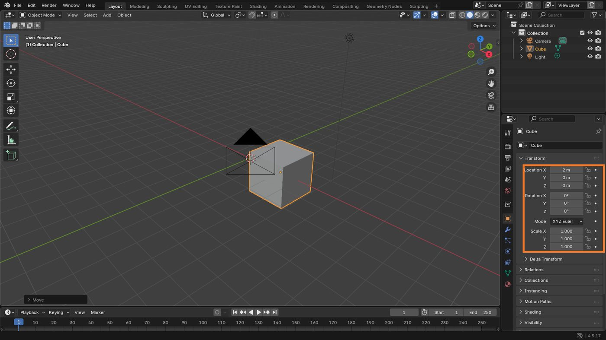
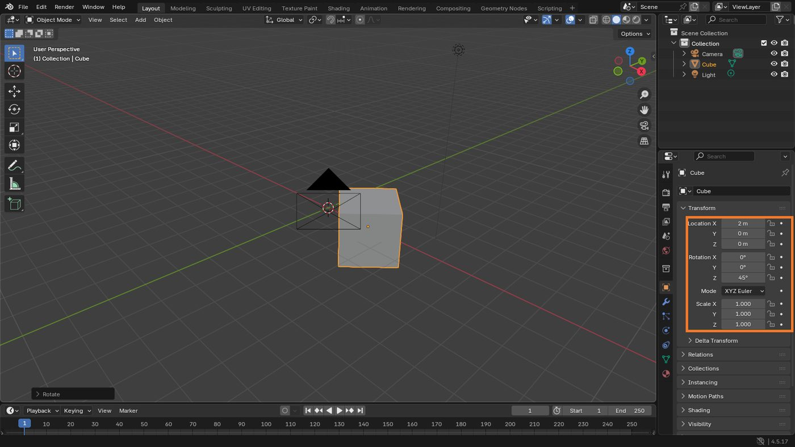
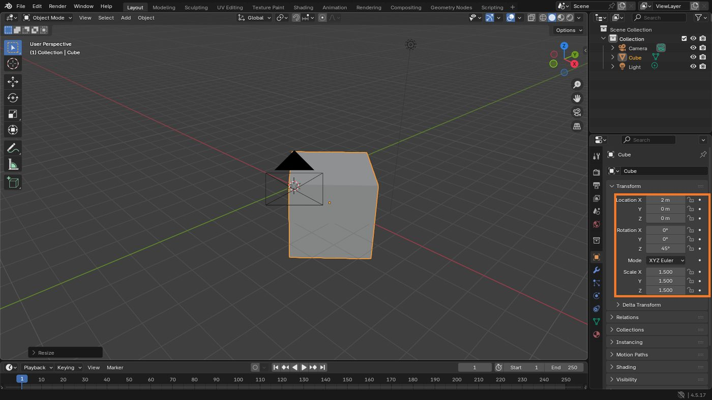
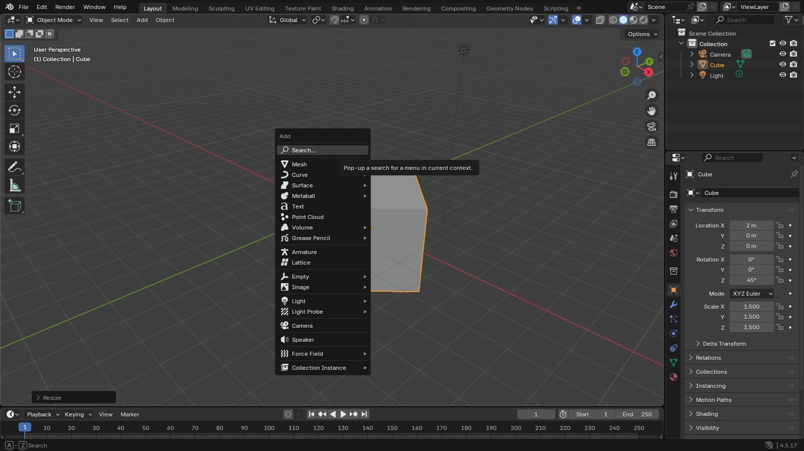

Lesson 2 of 10
Move, Rotate and Scale
The three commands you will use in every project: G, R and S.
Select the cube (it is already selected, with an orange outline). Hover over the Viewport and press the shortcuts. After each command you can see the values change in the Location, Rotation and Scale fields in Properties (the orange box in the screenshots).
1. Move: G
Press G, then X, then type 2, then Enter. The cube moves two meters along the X axis and Location X becomes 2 m.

2. Rotate: R
Press R, then Z, then type 45, then Enter. The cube turns 45 degrees around the Z axis.

3. Scale: S
Press S, then type 1.5, then Enter. The cube grows to one and a half times its size in every direction.

Important rules
| Shortcut | What it does |
|---|---|
| X / Y / Z | Limit the change to one axis after G, R or S |
| A number | Sets the exact value, like 2 or 45 |
| Enter | Confirm |
| Esc | Cancel the command |
| Ctrl + Z | Undo |
| Alt + G | Reset the location to zero (also Alt + R for rotation and Alt + S for scale) |
Adding a new object
Press Shift + A to open the Add menu. Under Mesh you will find Plane, Cube, Sphere, Cylinder and more. Shift + D duplicates the selected object and X deletes it.

Exercise
Put the cube back with Alt + G, Alt + R and Alt + S. Then you are ready for the next lesson.